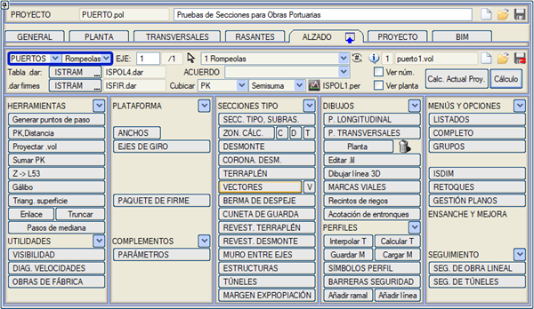
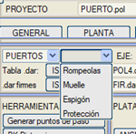
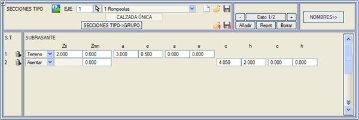
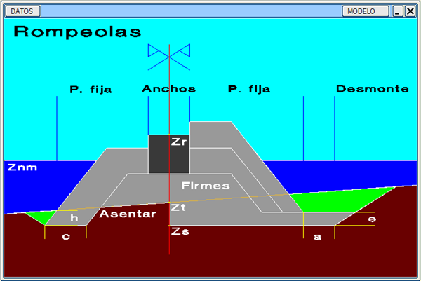
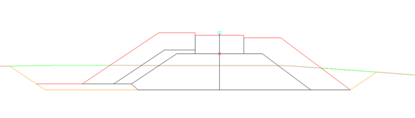
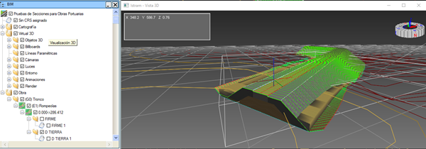

| |
|
LİMAN YAPILARI
|
Boykesit menüsünde dördüncü bir kesit tipi belirir: Karayolları, Demiryolları, Boru Hatları, Liman Yapıları. 
Liman Yapıları seçildiğinde, dört alt tip sunulur: Dalgakıran, Rıhtım, Mahmuz, Kıyı Koruma Yapıları. (Mevcut sürümde sadece dalgakıranlar için geliştirilmiştir): 
Menüde: Tip Kesit/Terasman bölümünde bu kesitin bir modeli gösterilir. Ve burada radye kotu (araziye, kırmızı kota göre veya mutlak), deniz seviyesi kotu ve radye geometrisini tanımlamak için her iki tarafta iki parametre tanımlanır. Arazi üzerine oturan kesitler için, dış kısımda bir fazla kazı yapmak üzere iki parametre, genişlik c ve derinlik h, tanımlanabilir. Ayrıca, kırmızı kotu farklı bir noktada tanımlamak istenirse, Dönme Ekseni menüsüne de erişim sağlanır. Demo klasöründeki rompeolas.isa dosyası, bu yeni olanakları kullanacak şekilde değiştirilmiştir. 
Radye Kotu için, radye tabanını araziye oturtan Oturt seçeneğimiz bulunmaktadır. 
Çekirdek genişlikleri Genişlikler menüsünde tanımlanır. Yan geometri ve şevler, Sabit Platform Vektörü olarak tanımlanır. İç bileşenler, Vektörel Üstyapı katmanlarıdır. Ayrıca yatay bir Kırmızı Kot ve Yarma ile Dolgu için şevler tanımlanmıştır. (Metrajlarda, kumların yerine konması dolgu şev eteği dolgusu olarak ölçülür). 
Demo klasöründe, simüle edilmiş bir örnek içeren rompeolas.isa dosyası bulunmaktadır. 
|